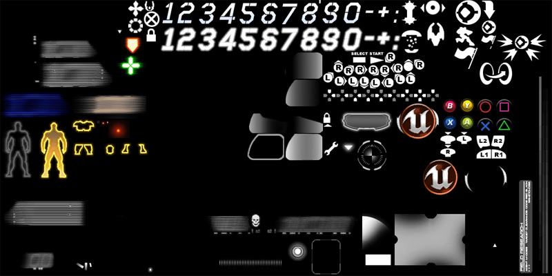

UDN
Search public documentation:
HUDTechnicalGuideCH
English Translation
日本語訳
한국어
Interested in the Unreal Engine?
Visit the Unreal Technology site.
Looking for jobs and company info?
Check out the Epic games site.
Questions about support via UDN?
Contact the UDN Staff
日本語訳
한국어
Interested in the Unreal Engine?
Visit the Unreal Technology site.
Looking for jobs and company info?
Check out the Epic games site.
Questions about support via UDN?
Contact the UDN Staff
UE3 主页 > 用户界面 & HUD > HUD 技术指南
HUD技术指南
概述
HUD类型
- Canvas(画布) - 使用Canvas类来描画HUD图形。
- Scaleform GFx - 使用Scaleform GFx集成来显示HUD图形和菜单。
画布HUD
Canvas类提供了向屏幕上描画图形和文本所需的所有工具。在使用虚幻引擎制作的很多游戏中都是用了这个方法，并且对于大多数游戏来说这是一个可行的解决方案。这个方法没有提供非常好的输入处理或动画，这使得它不适合创建菜单或复杂的用户界面。 关于使用Canvas类创建HUD的更多信息，请参照画布技术指南。Scaleform GFx HUD
虚幻引擎3中集成的Scaleform GFx也适合于创建游戏中的HUDs、菜单及用户界面。随之而来的是在Flash中设置页面的性能消耗，但是这使得设计人员可以自己设计界面而不需要完全地依赖程序原来程序中进行布局。 关于使用 Scaleform GFx创建HUD的更多信息，请参照 Scaleform技术指南。HUD类
 每次更新，玩家的HUD执行它的
每次更新，玩家的HUD执行它的 PostRender() 事件，该事件将启动重新渲染HUD的内容到屏幕上的过程。=PostRender()= 事件反过来调用主描画函数 DrawHUD() 。每次更新的事件调用序列如下所示：
 然后
然后 DrawHUD() 函数可以调用其它的更加专用的描画函数来往屏幕上描画独立的HUD元素。比如，可能有一个仅负责描画世界地图的函数 DrawMinimap() ，还有一些其它的描画玩家或点数的函数。
HUD属性
Debug(调试)- bShowDebugInfo(是否显示调试信息) - 如果该项为TRUE，那么当前的ViewTarget(查看目标)的调试属性将会显示在屏幕上。
- DebugDisplay(调试显示) - 该项是字符串数组，当
bShowDebugInfo为TRUE时，它指出了显示当前的ViewTarget对象的哪些调试信息。基本的引擎类型包括"人工智能"、"物理"、"武器"、"网络"、"相机"和"碰撞"。
- Canvas(画布) - 用于描画HUD到其上面的Canvas对象。*注意:* 每一帧都会赋予一个新的画布，仅从HUD::PostRender()事件中向画布上进行描画。请参照画布技术指南获得关于使用Canvas类的更多信息。
- PlayerOwner(玩家拥有者) - 引用拥有那个HUD的PlayerController(玩家控制器)，比如本地PlayerController。
- PostRenderedActors(后期渲染的对象) - 一个对象数组，它们需要调用它们的
NativePostRenderFor()和PostRenderFor()函数来描画HUD层。 - WhiteColor/GreenColor/RedColor(白色/绿色/红色) - 预制的白色、绿色和红色变量。
- bShowHUD(是否显示HUD) - 如果该项为TRUE，则HUD可见。
- bShowScores(是否显示分数) - 如果该项为TRUE，那么记分板可见。
- bShowBadConnectionAlert(是否显示坏的连接警告) - 如果该项为TRUE，那么将会在HUD上显示坏的连接的指示标记。这是根据延迟和包丢失在native代码中设置的。
- RenderDelta(渲染器时间间隔) - 自从上一次更新所过去的时间量，以秒为单位。
- LastHUDRenderTime(上一次HUD渲染时间) - 存放了当计算
RenderDelta时所使用的上一次渲染时间。
- ConsoleMessages(控制台消息) - 要显示的消息的数组。
- ConsoleColor(控制台消息颜色) - 当显示控制台消息时所使用的颜色。
- ConsoleMessageCount(控制台消息数量) - ConsoleMessages数组中可以保持的控制台消息的最大数量。
- ConsoleFontSize(控制台消息的字体大小) -
- MessageFontOffset(消息字体偏移量) - 当决定使用哪个字体时应用到LocalMessages(本地消息)上的FontSize（字体大小）的偏移量。
- MaxHUDAreaMessageCount（最大HUD区域消息数量） - 要显示的LocalMessages(本地消息)的最大数量。
- LocalMessages(本地消息) - 要显示的LocalMessages (本地消息)的数组。
- ConsoleMessagePos[X/Y](控制台消息位置[X/Y]) - 在屏幕上显示控制台消息的水平和垂直位置。
- KismetTextInfo(Kismet文本信息) - 要显示的Kismet DrawText(描画文本)信息的数组。
- bMessageBeep(消息Beep音） - 如果为TRUE，那么当显示任何新的控制台消息时都会发出嘟嘟的声音。
- HUDCanvasScale(HUD画布比例) - 在[0，1]范围内所使用的屏幕空间的量(针对TV)。
- Size[X/Y] - 视口水平方向和垂直方向上的尺寸，以像素为单位。。。
- Center[X/Y](中心[X/Y]) - 视口的水平方向和垂直方向的中心。
- Ratio[X/Y](比率[X/Y]) - 当前视口的水平方向及垂直方向的尺寸和原始分辨率1024x768的比率值。
HUD函数
Debug(调试)- ShowDebug [DebugType] - 切换显示玩家的当前 ViewTarget（视图目标）的属性。
- DebugType(调试类型) - 要显示或隐藏的属性。基本引擎所支持的值，包括"人工智能"、"物理"、"武器"、"网络"、"相机"和"碰撞"。
- ShowDisplayDebug [DebugType] - 决定当前是否设置显示指定的调试信息，比如它在
DebugDisplay数组中。- DebugType(调试类型) - 要选中的属性。基本引擎所支持的值，包括"人工智能"、"物理"、"武器"、"网络"、"相机"和"碰撞"。
- ShowDebugInfo [out_YL] [out_YPos] - HUD基本调试信息渲染的入口点。通过 "showdebug" 控制台命令来激活及控制。可以重载它来基于每个游戏显示自定义的调试信息。
- out_YL - 当前字体的高度。
- out_YPos -画布上的垂直位置。=out_YPos += out_YL= 给出了描画下一行调试信息的文本的位置。
- DrawRoute [Target] - 描画ViewTargets的调试信息，ViewTargets是相对于它们当前路径的机器人。
- Target - 引用Pawn (机器人)，以便描画它的路径信息。
- ToggleHUD - 它是切换HUD可见性的可执行函数，通过
bShowHUD变量实现。 - ShowHUD - 通过调用
ToggleHUD()函数来切换HUD可见性的可执行函数。 - ShowScores - 通过调用
SetShowScores()函数来切换游戏中积分板的可见性的可执行函数。 - SetShowScores [bNewValue] - 设置游戏中记分板的可见性的函数，通过
bShowScores变量实现。- bNewValue -
bShowScores变量的新值。
- bNewValue -
- DisplayBadConnectionAlert(显示不良连接的警告) - 用于显示不良连接警告信息的函数基类。子类需要重载这个函数。
- PreCalcValues - 计算并分配Size[X/Y]、Center[X/Y]和Ratio[X/Y]的值。
- PostRender - HUD的主要描画函数。引擎在每帧中都会调用它。
- DrawHUD - 主要的游戏HUD描画函数。在任何消息之前进行调用。子类应该重载这个函数来处理针对特定游戏的HUD描画。
- Draw2DLine [X1] [Y1] [X2] [Y2] [LineColor] - 在屏幕的2D空间中描画一条直线。
- [X/Y]1 - 描画直线开始处的水平和垂直位置，以像素为单位。
- [X/Y]2 - 描画直线结束处的水平和垂直位置，以像素为单位。
- LineColor - 描画直线时所使用的颜色。
- Draw3DLine [Start] [End] [LineColor] - 在屏幕的3D空间中描画一条直线。
- Start - 一个向量，在世界空间中指出了直线的起始点。
- End - 一个向量，在世界空间中指出了直线的结束点。
- LineColor - 描画直线时所使用的颜色。
- DrawText [Text] [Position] [TextFont] [FontScale] [TextColor] - 向屏幕描画一个文本字符串。
- Text - 要描画到屏幕上的字符串。
- Position - 一个二维向量，指出了在屏幕上描画文本的水平位置(X)和垂直位置(Y)。
- TextFont - 描画文本所使用的字体。
- FontScale - 一个二维向量，指出了文本在水平(X方向)和垂直方向的缩放比例。
- TextColor - 向屏幕上描画文本时所使用的颜色。
- DrawActorOverlays [Viewpoint] [ViewRotation] - Native函数。为这真描画的actors描画覆盖层，并把acotors本身添加到PostRenderedActors 数组中。
- Viewpoint - 玩家相机的当前位置。
- ViewRotation - 玩家相机的当前旋转值。
- AddPostRenderedActor [A] - 添加一个Actor到
PostRenderedActors列表中。- A - 引用指向那个要添加到数组中的Actor。
- RemovePostRenderedActor [A] - 从
PostRenderedActors列表中删除一个Actor。- A - 引用那个要从数组中删除的Actor。
- GetFontSizeIndex [FontSize] - 返回和给定字体尺寸相对应的字体。
- FontSize - 字体的尺寸，以便用于获得那个字体。
- PlayerOwnerDied - 它是一个函数存根，当 HUD的
PlayerOwner死亡时调用它。子类需要重载这个类。 - OnLostFocusPause [bEnable] - 由于主窗口的聚焦丢失而暂停或取消暂停游戏。
- bEnable - 如果为TRUE，启用暂停状态。否则，禁用暂停状态。
- ClearMessage [M] - 清除给定的LocalMessage(本地消息)。
- M - 引用要清除的HUDLocalizedMessage 。
- Message [PRI] [Msg] [MsgType] [LifeTime] - 用于添加新的控制台消息的封装函数。调用
AddConsoleMessage()。- PRI - 引用发送消息的玩家的PlayerReplicationInfo 。
- Msg - 消息的文本。
- MsgType - 消息类型,也就是'Say(对话)', 'TeamSay(团队对话)'等.
- LifeTime - 可选。显示消息所持续的时间，以秒为单位。
- AddConsoleMessage [M] [InMessageClass] [PRI] [LifeTime] - 添加一个新的要显示的ConsoleMessage 。
- M - 消息的文本。
- InMessageClass - 新消息的类(LocalMessage或其子类)。
- PRI - 引用指向和消息相关联的玩家的PlayerReplicationInfo。
- LifeTime - 可选。显示消息所持续的时间，以秒为单位。
- DisplayConsoleMessages - 把尚未描画的ConsoleMessages描画到屏幕上。
- LocalizedMessage [InMessageClass] [RelatedPRI_1] [RelatedPRI_2] [CriticalString] [Switch] [Position] [LifeTime] [FontSize] [DrawColor] [OptionalObject] - 添加要显示的新的LocalMessage的封装函数。调用
AddLocalizedMessage()=。同时，如果消息类的 =bIsSpecial属性是 FALSE，那么则把消息添加为控制台消息。- InMessageClass - 新消息的类(LocalMessage或其子类)。
- RelatedPRI_1 - 引用和消息相关联的玩家的第一个PlayerReplicationInfo。这个消息类定义了如何使用PRI(玩家复制信息)。
- RelatedPRI_2 - 引用和消息相关联的玩家的第二个PlayerReplicationInfo。这个消息类定义了如何使用PRI(玩家复制信息)。
- CriticalString - 消息的文本。
- Switch - 消息开关。消息了类决定了如何使用开关。
- Position - 消息在屏幕上的垂直位置。
- LifeTime - 消息显示的持续时间量，以秒为单位。
- FontSize - 显示消息所使用的字体大小。使得该字体大小偏移
MessageFontOffset的量，并得到的值传给GetFontSizeIndex()函数来获得显示那个消息所使用的字体。 - DrawColor -显示消息时所使用的颜色。
- OptionalObject - 可选。. 到和消息相连的对象的引用。这个消息类定义了如何使用那个对象。
- AddLocalizedMessage [Index] [InMessageClass] [CriticalString] [Switch] [Position] [LifeTime] [FontSize] [DrawColor] [MessageCount] [OptionalObject] - 添加一个真正的消息到
LocalMessages数组。- Index -
LocalMessages数组中用于放置新的消息的索引。 - InMessageClass - 新消息的类(LocalMessage或其子类)。
- CriticalString - 消息的文本。
- Switch - 消息开关。消息了类决定了如何使用开关。
- Position - 消息在屏幕上的垂直位置。
- LifeTime - 消息显示的持续时间量，以秒为单位。
- FontSize - 显示消息所使用的字体大小。使得该字体大小偏移
MessageFontOffset的量，并得到的值传给GetFontSizeIndex()函数来获得显示那个消息所使用的字体。 - DrawColor -显示消息时所使用的颜色。
- MessageCount - 可选。当前
LocalMessages数组中消息的数量。 - OptionalObject - 可选。. 到和消息相连的对象的引用。这个消息类定义了如何使用那个对象。
- Index -
- GetScreenCoords [PosY] [ScreenX] [ScreenY] [InMessage] - 计算在屏幕上描画LocalMessage的位置。
- PosY - 消息的垂直位置。
- ScreenX - 输出。输出水平位置，以像素为单位。
- ScreenY - 输出。输出垂直位置，以像素为单位。
- InMessage - 输出。为其获取屏幕位置的消息。
- DrawMessage [i] [PosY] [DX] [DY] - 执行设置来显示一个LocalMessage，并调用
DrawMessageText()来显示那个消息。- i - 要显示的消息的
LocalMessages数组中的索引值。 - PosY - 消息在屏幕上的垂直位置。
- DX - 输出。输出消息的文本的宽度。
- DY - 输出。输出消息的文本的高度。
- i - 要显示的消息的
- DrawMessageText [LocalMessage] [ScreenX] [ScreenY] - 描画LocalMessage 的文本到屏幕上。
- LocalMessage - 要显示其文本的LocalMessage。
- ScreenX - 在屏幕上描画消息文本的水平位置，以像素为单位。
- ScreenY - 在屏幕上描画消息文本的垂直位置，以像素为单位。
- DisplayLocalMessages - 执行LocalMessages的布局然后进行显示。
- DisplayKismetMessages - 显示所有未定的Kismet DrawText(描画文本)消息。
MobileHUD
MobileHUD属性
Controls(控制)- JoystickBackground - The texture containing the graphic for the background of the joystick elements.
- JoystickBackgroundUVs - 这个TextureUVs(贴图UVs) 指出了
JoystickBackground贴图中图像的坐标。 - JoystickHat - 这个贴图包含了实际的游戏控制杆元素的图像。
- JoystickHatUVs -这个TextureUVs(贴图UVs) 指出了
JoystickHat贴图中图像的坐标。 - ButtonImages - 这是个贴图数组，包含了屏幕上按钮的图形。
- ButtonUVs -这是个TextureUVs（贴图UVs）数组指出了
ButtonImages中贴图的坐标。 - ButtonFont - 描画屏幕上按钮的标签所使用的文字。
- ButtonCaptionColor - 当描画屏幕上按钮的标签时所使用的颜色。
- TrackballBackground - 这个贴图包含了跟踪球元素的背景图像。
- TrackballBackgroundUVs - 这个TextureUVs(贴图UVs)指出了
TrackballBackground贴图中图像的坐标。 - TrackballTouchIndicator - 这个贴图包含了跟踪球触摸指示器的背景图像。
- TrackballTouchIndicatorUVs - 这个TextureUVs(贴图UVs)指出了
TrackballTouchIndicator贴图中图像的坐标。 - SliderImages - 一个贴图数组，包含了屏幕上滑动条的图像。
- SliderUVs - 这个TextureUVs(贴图UVs)数组指出了
SliderImages贴图中图像的坐标。
- bDebugTouches - 如果为真，则显示关于触摸的调试信息。
- bDebugZones - 如果为TRUE，将会显示关于各种移动设备输入区域的相关调试信息。
- bDebugZonePresses - 如果为TRUE，仅当按下时显示关于各种移动设备输入区域的相关调试信息。
- bShowGameHUD - 如果该项为TRUE，那么将显示标准的游戏 HUD。这为了支持完全地隐藏HUD并仍然支持ShowHUD命令所提供的。
- bShowMobileHUD - 如果这项为TRUE，将显示移动设备HUD （也就是输入区域等）。
- bForceMobileHUD - 如果该项为 TURE，那么即使在非移动平台上也显示HUD。
- bShowMobileTilt - 如果这项为TRUE，那么将会显示设备倾斜。
- MobileTilt[X/Y] - 用于显示设备倾斜的水平位置和垂直位置。
- MobileTiltSize - 显示设备倾斜的尺寸。
MobileHUD函数
Drawing(描画)- ShowMobileHUD - 返回是否显示移动设备HUD。
- RenderMobileMenu - 移动设备HUD菜单描画函数。当完成移动设备HUD描画后
PostRender()调用该函数。
- DrawInputZoneOverlays - 主要的移动设备HUD描画函数，在其他对象上描画输入区域。当完成主要的HUD描画后，
PostRender()调用该函数。 - DrawMobileZone_Button [Zone] - 为给定的输入区域描画一个按钮。
- Zone - 为其描画按钮的移动设备输入区域。
- DrawMobileZone_Joystick [Zone] - 为给定的输入区域描画一个控制杆。
- Zone - 用于描画控制杆的移动设备输入区域。
- DrawMobileZone_Trackball [Zone] - 为给定区域描画一个跟踪球。
- Zone - 为其描画跟踪球的移动设备输入区域。
- DrawMobileZone_Slider [Zone] - 为给定区域描画一个滑动条。
- Zone - 为其描画滑动条的移动设备输入区域。
- DrawMobileTilt [MobileInput] - 使用给定MobilePlayerInput的倾斜信息描画设备倾斜。
- MobileInput - 将要显示的提供倾斜信息的MobilePlayerInput (移动设备玩家输入)。
UDKHUD
UDKHUD属性
- GlowFonts - 这种字体用于描画具有闪光或光溢出效果的脉冲字体。数组中的 [0]元素存放着闪光的字体。[1]元素存放着描画正常文本的字体。
- PulseDuration - 文本产生闪光脉冲的时间长度。
- PulseSplit - 当达到这个时间时脉冲将会从淡出效果变为淡入效果。
- PulseMultiplier - 文本产生脉冲效果现象的程度 - 注意这个值将会和 1.0相加。(所以 PulseMultipler= 0.5 = 1.5)
- TextRenderInfo - FontRenderInfo结构体存放了在字体渲染中使用的信息。这应该在HUD子类的默认属性中进行设置，并把它传入给任何需要它的
Canvas.DrawText()函数。 - ConsoleIconFont - 用于特定游戏机平台的字体。
- BindTextFont - 当这些字体没有在ConsoleIconFont中通过按钮表示时，这种字体用于显示输入绑定。
UDKHUD 函数
- DrawGlowText [Text] [X] [Y] [MaxHeightInPixels] [PulseTime] [bRightJustified] - 描画具有闪光或光溢出效果的脉冲字体。
- Text - 要显示的文本字符串。
- [X/Y] - 用于在屏幕上描画文本的水平位置和垂直位置。
- MaxHeightInPixels - 可选的。文本的最大高度。
- PulseTime - 可选的。一次字体闪光所占用的时间。
- bRightJustified - 可选的。如果该项为TRUE，那么文本将会对齐到画布的当前的剪切区域的右侧边缘处。
- TranslateBindToFont [InBindStr] [DrawFont] [OutBindStr] - 把其中具有潜在漏掉的顺序数据转换为应该显示的字体和字符串。
- InBindStr - 包含漏掉数据的字符串。
- DrawFont - 输出. 输出用于描画字符串的字体；是ConsoleIconFont 或BindTextFont。
- OutBindStr - 输出。输出剥离了漏掉数据的字符串。
- DisplayHit [HitDir] [Damage] [damageType] - 显示一个碰撞效果，展示伤害来源的方向。
- HitDir - 指出了伤害来源方向的向量。
- Damage - 所施加的伤害量。
- damageType -伤害的类型。
Texture Atlas（贴图组合）图标坐标

贴图组合中的独立图标是通过使用坐标来访问的。虚幻引擎3中使用的标准方法是指出开始对贴图进行采样的位置的左上角像素的水平位置和垂直位置，及要采样的长度和宽度(通常通过U and V=来指定。） 这些坐标通常存储在结构体中，也就是 =MobileHUD.TextureUVs 或 UIRoot.TextureCoordinates 中。